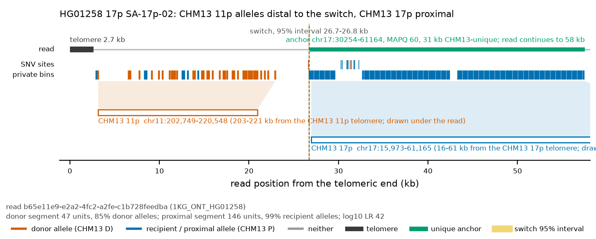
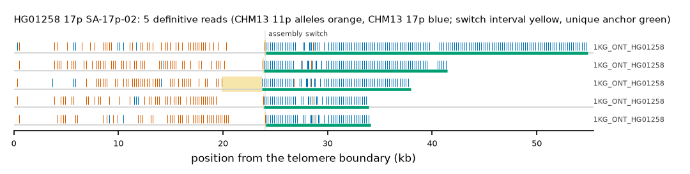

HG01258 17p: SA-17p-02
Claim HG01258|17p|SA-17p-02. All claims
- cohort
- 1000 Genomes ONT
- individual
- HG01258
- haplotype
- hap1
- arm
- 17p
- allele
- SA-17p-02 (foreign)
- model
- donor CHM13 11p, proximal CHM13 17p, recipient CHM13 17p, pattern DP
- claimed end(s)
HG01258#1#CM088120.1#L- assembly switch
- 16,713 bp from the telomere boundary; on CHM13 chr17:9825; own-window projection 23943-24100 bp
- v1 verdict
- confirmed (confirmed)
- definitive tier
- definitive
- reads
- 5 conclusive switch-concordant, 0 discordant, 0 contradicting, 1 consistent; 5 definitive (1KG_ONT_HG01258)
- by tier
- definitive:5;consistent:1
- source
- https://ftp.1000genomes.ebi.ac.uk/vol1/ftp/data_collections/1KG_ONT_VIENNA/t2t/HG01258.t2t.cram
- note
- confirmed:robust; keep


Conclusive and contradicting reads (5)
1 further reads are consistent (switch test passed, but no terminal telomere, anchor or integrity); they are
listed in reads.tsv.gz. Switch: 95% interval in subtelomere coordinates (kb from the
telomere boundary) and projected on CHM13 17p. Each samtools command prints the read's record
from its public file (CRAM: add the CHM13 v2.0 FASTA as -T).
| read | dataset | tier | length | switch (subtelomere, kb) | switch on CHM13 | donor units / purity | proximal units / purity | anchor (CHM13, MAPQ, unique) | own-assembly best end | fetch |
|---|---|---|---|---|---|---|---|---|---|---|
069a57e6-13da-436c-831b-a628a5c896f6 | 1KG_ONT_HG01258 | definitive | 43,875 | 23.8-23.9 | chr17:15669-15781 | 49 / 0.98 | 79 / 0.99 | chr17:30260-47848, 60, 17.6 kb | HG01258#1#CM088120.1#L (96.9%) ✓ | samtoolssamtools view -F 0x900 -T chm13v2.0.fa.gz -X 'https://ftp.1000genomes.ebi.ac.uk/vol1/ftp/data_collections/1KG_ONT_VIENNA/t2t/HG01258.t2t.cram' 'https://ftp.1000genomes.ebi.ac.uk/vol1/ftp/data_collections/1KG_ONT_VIENNA/t2t/HG01258.t2t.cram.crai' 'chr17:1-5000' | awk -v r='069a57e6-13da-436c-831b-a628a5c896f6' '$1==r' |
48568c91-e036-4bae-b8cb-f7fbad3267cc | 1KG_ONT_HG01258 | definitive | 40,206 | 19.9-23.7 | chr17:11878-15678 | 45 / 0.91 | 69 / 0.97 | chr17:29928-44735, 60, 14.8 kb | HG01258#1#CM088120.1#L (96.2%) ✓ | samtoolssamtools view -F 0x900 -T chm13v2.0.fa.gz -X 'https://ftp.1000genomes.ebi.ac.uk/vol1/ftp/data_collections/1KG_ONT_VIENNA/t2t/HG01258.t2t.cram' 'https://ftp.1000genomes.ebi.ac.uk/vol1/ftp/data_collections/1KG_ONT_VIENNA/t2t/HG01258.t2t.cram.crai' 'chr17:1-5000' | awk -v r='48568c91-e036-4bae-b8cb-f7fbad3267cc' '$1==r' |
b65e11e9-e2a2-4fc2-a2fe-c1b728feedba | 1KG_ONT_HG01258 | definitive | 59,842 | 24.0-24.1 | chr17:15670-15775 | 47 / 0.85 | 146 / 0.99 | chr17:30254-61164, 60, 30.9 kb | HG01258#1#CM088120.1#L (97.3%) ✓ | samtoolssamtools view -F 0x900 -T chm13v2.0.fa.gz -X 'https://ftp.1000genomes.ebi.ac.uk/vol1/ftp/data_collections/1KG_ONT_VIENNA/t2t/HG01258.t2t.cram' 'https://ftp.1000genomes.ebi.ac.uk/vol1/ftp/data_collections/1KG_ONT_VIENNA/t2t/HG01258.t2t.cram.crai' 'chr17:1-5000' | awk -v r='b65e11e9-e2a2-4fc2-a2fe-c1b728feedba' '$1==r' |
ad2528fe-dbdb-4e18-93ba-1995d868f928 | 1KG_ONT_HG01258 | definitive | 71,282 | 23.9-23.9 | chr17:15672-15704 | 46 / 0.93 | 47 / 0.98 | chr17:30181-40469, 60, 10.3 kb | HG01258#1#CM088120.1#L (92.9%) ✓ | samtoolssamtools view -F 0x900 -T chm13v2.0.fa.gz -X 'https://ftp.1000genomes.ebi.ac.uk/vol1/ftp/data_collections/1KG_ONT_VIENNA/t2t/HG01258.t2t.cram' 'https://ftp.1000genomes.ebi.ac.uk/vol1/ftp/data_collections/1KG_ONT_VIENNA/t2t/HG01258.t2t.cram.crai' 'chr11:200372-207371' | awk -v r='ad2528fe-dbdb-4e18-93ba-1995d868f928' '$1==r' |
cb38b5db-42ad-455b-acbc-3ea05e84305a | 1KG_ONT_HG01258 | definitive | 39,765 | 24.0-24.1 | chr17:15669-15723 | 45 / 0.96 | 47 / 0.98 | chr17:30202-40507, 60, 10.3 kb | HG01258#1#CM088120.1#L (97.7%) ✓ | samtoolssamtools view -F 0x900 -T chm13v2.0.fa.gz -X 'https://ftp.1000genomes.ebi.ac.uk/vol1/ftp/data_collections/1KG_ONT_VIENNA/t2t/HG01258.t2t.cram' 'https://ftp.1000genomes.ebi.ac.uk/vol1/ftp/data_collections/1KG_ONT_VIENNA/t2t/HG01258.t2t.cram.crai' 'chr11:200372-207371' | awk -v r='cb38b5db-42ad-455b-acbc-3ea05e84305a' '$1==r' |
Files and IGV
This is a showcase claim: its reads are in the repository under evidence/showcase/HG01258__17p__SA-17p-02/ with IGV sessions CHM13 v2.0 (loci chr11:192372-227028 and chr17:1-60001) and own assembly, and a what-you-should-see note. Split at the switch, the distal segments of 5 of 5 showcase reads align to CHM13 11p and the proximal segments of 4 to CHM13 17p at MAPQ 60.
Re-derive this verdict
git clone https://github.com/jlanej/human-subtelomere-atlas && cd human-subtelomere-atlas
evidence/replicate_claim.sh 'HG01258|17p|SA-17p-02'The script fetches the cited reads from the public source by region and read ID, re-runs the frozen criteria and compares every per-read and claim verdict with this page (details).